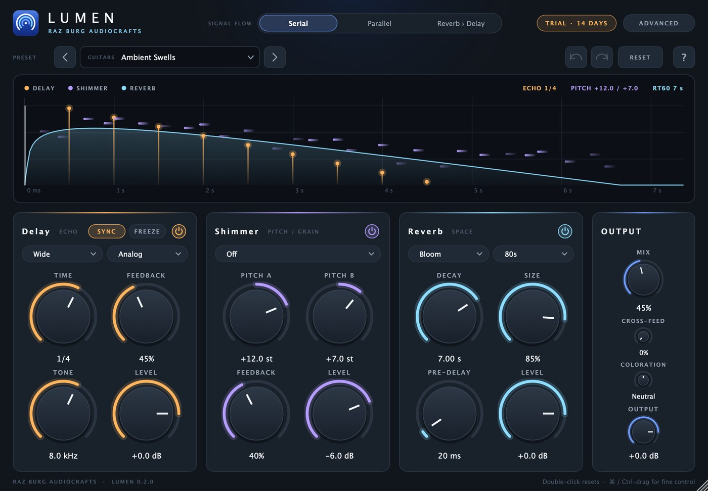
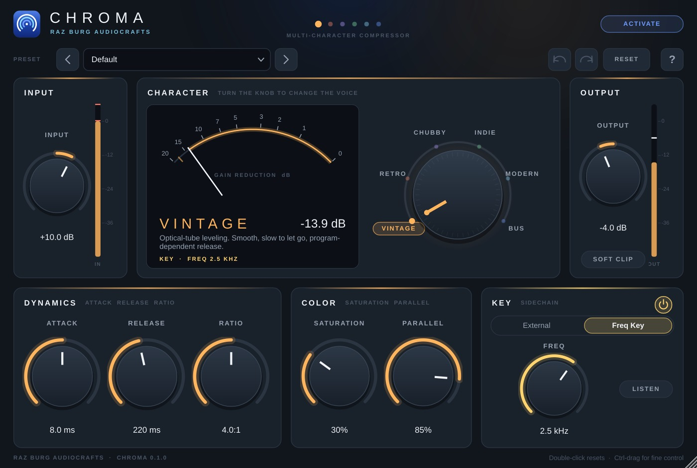
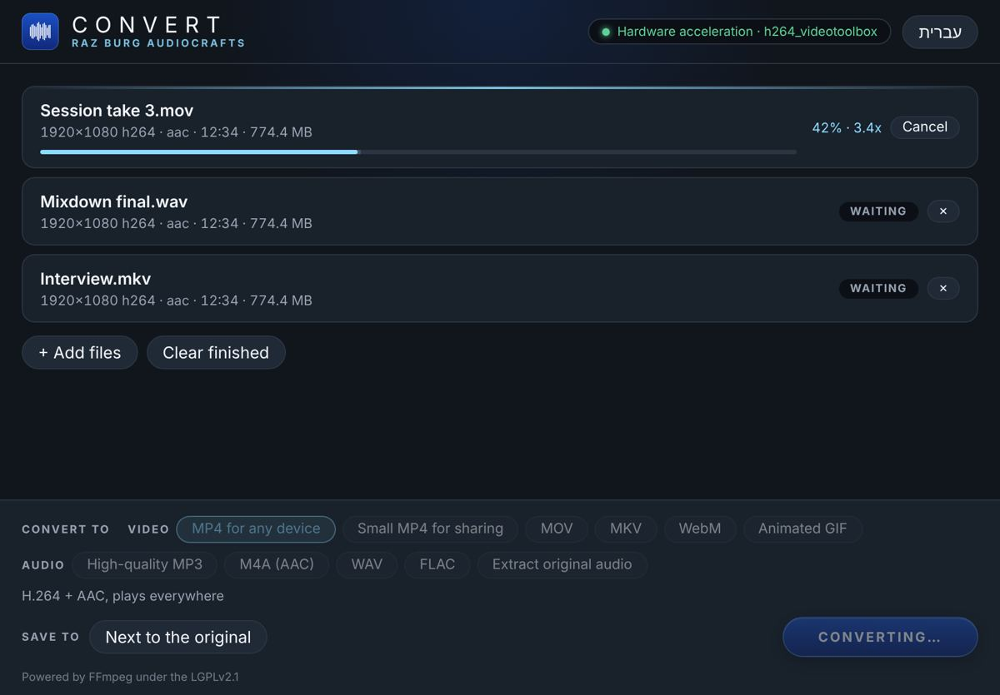

Hand-built audio tools for producers and engineers. Made for Pro Tools, Logic and Cubase, on Mac and Windows.
Meet LumenSee ChromaA creative space processor that blends lush reverbs, warm analog-style delays and a glittering pitch shimmer into one instrument. It opens fully dry, so nothing changes until you switch an engine on.

Six compressor characters on one knob. Turn it and the whole voice changes: how it listens, how hard it bends in, how it lets go and how its saturation sounds. It opens with no processing.

Drop in any audio or video file and get exactly the format you need. Batch queues, hardware acceleration and presets that just make sense.
Signed installers are on the way. Until then your computer may warn on first launch. On Mac: open System Settings › Privacy & Security and click Open Anyway. On Windows: click More info › Run anyway.

Every tool starts from a real need in the studio, and is tested in real mixes.
Protected with iLok. Every user can activate each plugin on up to two computers.
Every Raz Burg AudioCrafts plugin and app is free to download, with no trial limits.